Render Pass Mist para criar efeito de nevoeiro
A Render Pass Mist (nevoeiro) existe tanto em Blender Internal Render como em Cycles. Neste texto, utilizamos o Cycles mas as configurações não são muito diferentes e criar um efeito similar no BIR não deverá suscitar grande dificuldade
O Mist cria uma espécie de "máscara" (escala de cinzentos) com valores entre 0.0 e 1.0. Preto significa sem efeito Mist e Branco significa Mist/nevoeiro total.
1. Crie uma cena com alguma profundidade para perceber melhor o efeito.
No nosso caso, utilizámos um plano com algumas "montanhas" (criadas com Proportional Edit) e depois dois Modifiers Array com Value de 4. Inserimos ainda duas Suzannes com cores diferentes e uma lâmpada Sun.
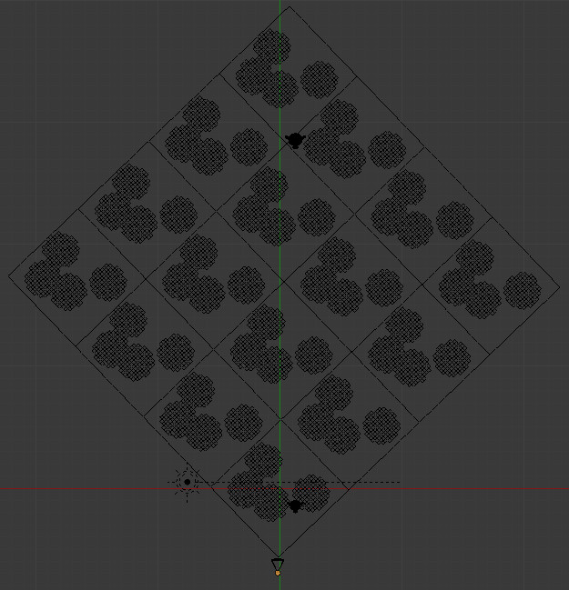2. No painel Render Layers, ative Mist nas Passes.
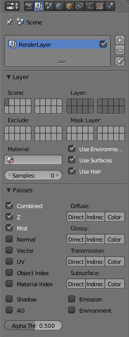3. Agora, no painel World pode configurar o Start (distância a que começa o Mist, medida a partir da câmara) e o Depth (onde o Mist atinge valor 1.0, deste ponto em diante existe nevoeiro total).

4. Nas opções da câmara, ative a opção Mist para poder visualizar no 3D View o Start e o Depth.
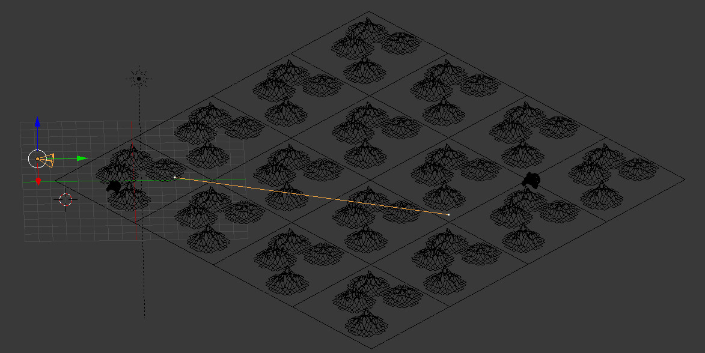5. No Node Editor, modo Compositing, crie uma configuração de nós similar à apresentada em baixo. Com esta configuração vamos misturar (Color > Mix) a imagem renderizada com a cor azul (ou outra cor qualquer) e controlar a mistura com o nó Map Value (Vector).
Na realidade, pode ligar diretamente o Mist ao Fac do Mix (tal como na imagem abaixo) mas é preferível utilizar o Map Value para poder ter mais controle sobre o efeito.
-
Map Value
- offset: permite deslocar o nevoeiro no espaço
- size: permite controlar intensidade do nevoeiro
- Use Minimum: introduz um valor mínimo de nevoeiro para toda a imagem (por pré-definição é 0.0)
- Use Maximum: introduz um limite máximo ao valor de nevoeiro (pro pré-definição é 1.0)
Imagem renderizada no Node Editor (através do nó Output > Viewer)
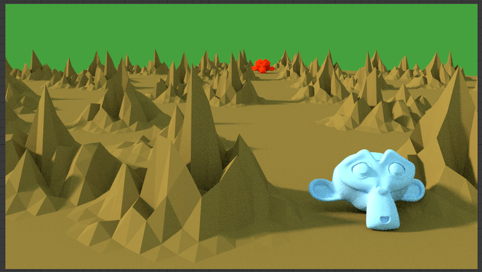Resultado do Mist (através do nó Output > Viewer)
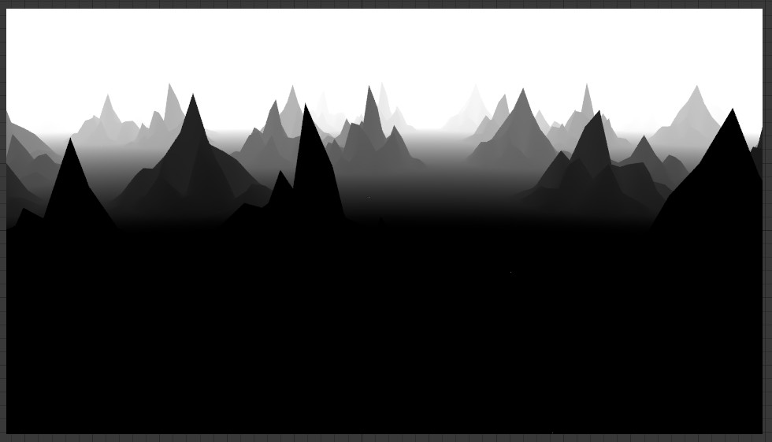Imagem renderizada misturada com azul tendo em conta o Mist (através do nó Output > Viewer).
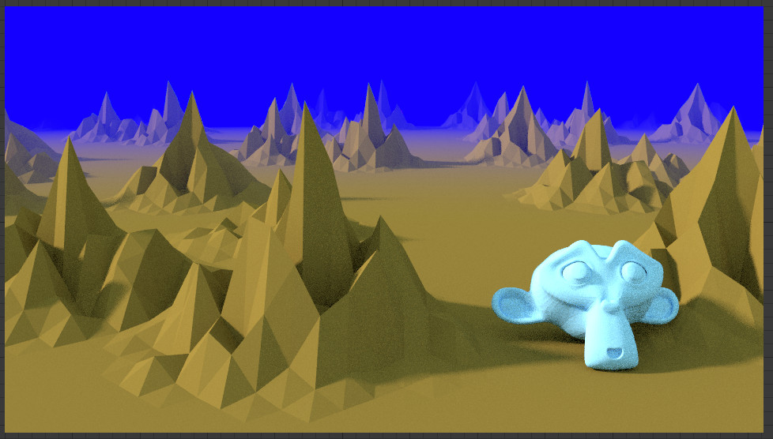Com Offset = -0.2, repare que a Suzanne fica visível e o nevoeiro é empurrado.
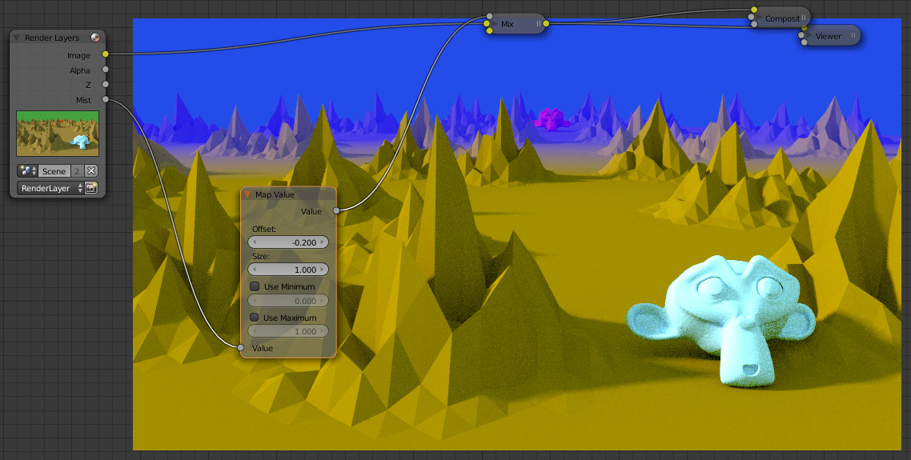Com Offset = 0.9, o nevoeiro é puxado na direção da câmara.
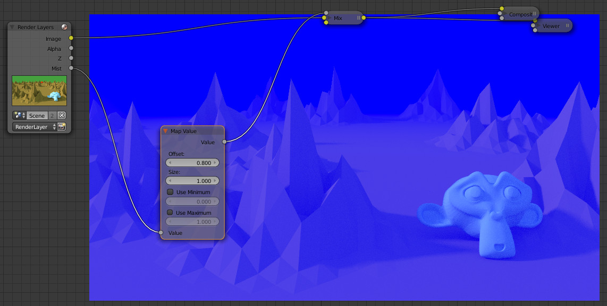Com Size 0.7, o nevoeiro perde intensidade e a Suzanne vermelha fica visível.
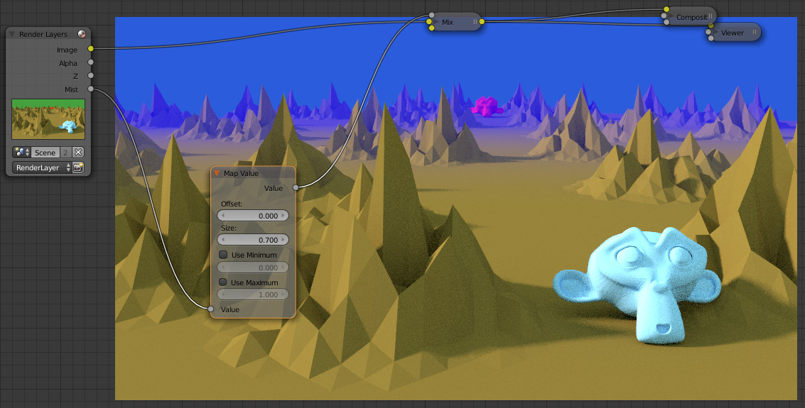Com Size 5.5, o nevoeiro fica mais intenso.
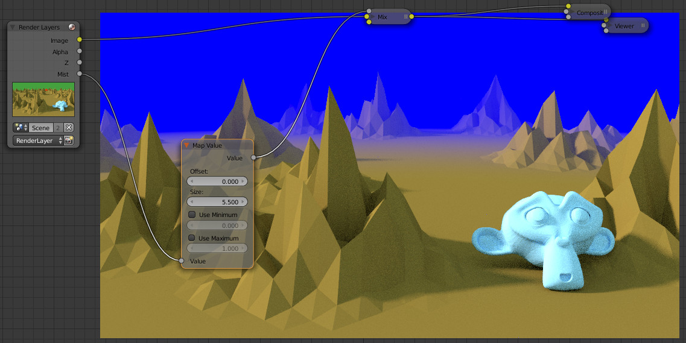Nevoeiro tem valor mínimo 0.3 e vai até ao 1.0
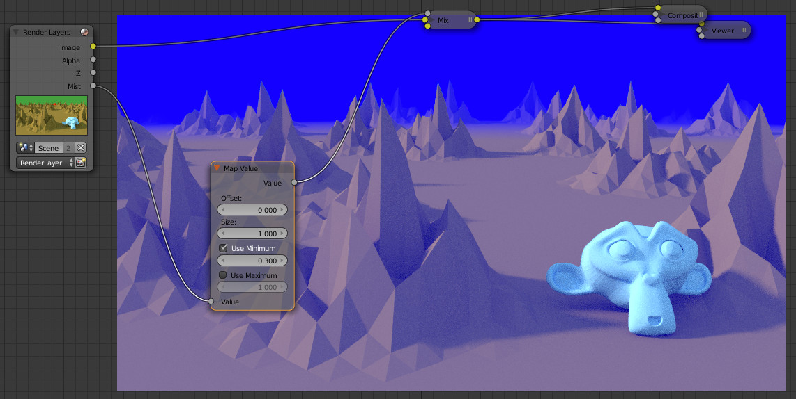Máximo é 0.8 (repare que se sobrepõe ao 1.0 do Size)
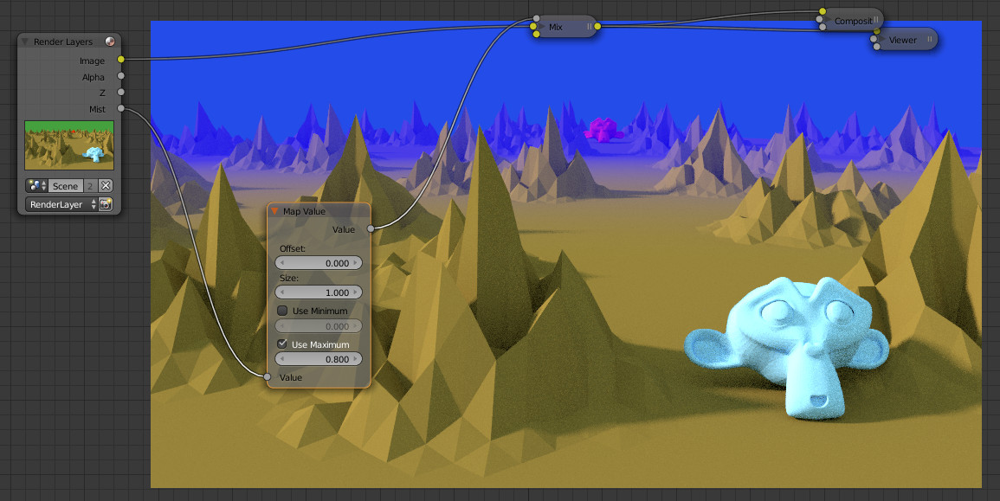Pode combinar as várias opções reduzindo/aumentando a distância entre 0.0 e 1.0 ou manipular os valores 0.0 e 1.0.